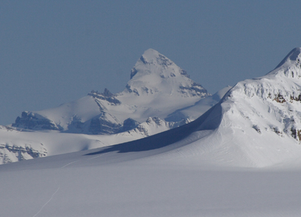

Skiing
Spring skiing

Colin Haley climbing the West face of Mt. Lefroy, with views into the Lake O'hara basin and beyond
Often in May, I focus a lot of my playtime on skiing some of the bigger alpine lines the Rockies has to offer. The inspiration I find in this range seems to be unlimited, and having my psyched friends Colin Haley and Ptor Spricenieks around increased the stoke even more.
Conditions this year were tricky though. A drought with summer-like temps at the beginning of May, followed by mixed weather with very little precip or good overnight freezes was the grim reality we had to work with. This combo made it tricky to get as much done as we hoped, but we still managed. I've generally been patient, and skied a lot of steep lines in powdery conditions. But the reality is, that often when snow sticks to icy north faces, the sun quickly changes the surface of it to something else. With snowpack and surface conditions going through constant change, the temperatures need to be carefully monitored. Timing needs to be calculated for both safety, success, and for maximum pleasure. Getting the goods in prime conditions requires some luck perhaps, but definitely a lot of forethought. The snow finally came near the end of the month, and on the 26th of May, we got lucky and skied Mt. Temple from it's summit it amazing conditions.
So here are some photos, from various roadside adventures May adventures. Hopefully the captions tell enough of the story.
Also worth checking out are two links to G3's blog, from some crucial late April shredding. They are the stories and photos from very memorable days I had on Mt. Burgess and Mt. Stanley. I believe the NW couloir on Mt. Burgess was probably a first descent, and hopefully a video from that day will be linked here soon. The day on Stanley was super memorable for the fantastic conditions and ultra-classics I finally got around to"ticking".

On the West summit of Lefroy. The main summit, about two meters higher is about 50 meters behind us, and garded by some ripe cornices we weren't interested in climbing accross.

Colin shredding chunky corn on the West Face of Mt. Lefroy, with the classic East face of Victoria in the background
 JW, climbing the East face of Mt. Victoria, but un-inspiring snow conditions and warm temps had us turning around about 500 meters below the summit. Photo:Colin Haley
JW, climbing the East face of Mt. Victoria, but un-inspiring snow conditions and warm temps had us turning around about 500 meters below the summit. Photo:Colin Haley

A couple hours later, we had recovered a stashed pack of rock climbing gear and were enjoying perfect climbing conditions at the Back of the Lake. Two feet of snow on the ground and shirts-off conditions all day, even while belaying! We managed 6 pitches of rock and over 4000' of skiing. Multi-sport at it's finest! Colin, warming up on Wicked Gravity
 Next up was the Silverhorn, the peak to the right of Athabasca, and the ski line is the sun shadow line right of center. Unfortunately a wind slab turned us around about half way up, but better safe than sorry. At least it still yielded some good turns.
Next up was the Silverhorn, the peak to the right of Athabasca, and the ski line is the sun shadow line right of center. Unfortunately a wind slab turned us around about half way up, but better safe than sorry. At least it still yielded some good turns.

Ptor brewing coffee at a campground in the wee hours before the attempt
 Colin and Ptor touring up the glacier
Colin and Ptor touring up the glacier
 Kicking Steps
Kicking Steps
 Ptor shredding
Ptor shredding
 Ptor in his element. Always fun to ski around so much blue ice, especially in sweet powder!
Ptor in his element. Always fun to ski around so much blue ice, especially in sweet powder!
 Colin getting a bit of a face shot. Not bad, considering there had been virtually no new snow in a couple of weeks.
Colin getting a bit of a face shot. Not bad, considering there had been virtually no new snow in a couple of weeks.

JW catching up, after finally puttng the camera away. Great turns all the way to the parking. A super fun day.
 Ptor crossing the barely frozen Constellation Lakes. Unfortunately the day didn't produce anything worth writing about as far as ski lines go, but it was cool to check out a new valley.
Ptor crossing the barely frozen Constellation Lakes. Unfortunately the day didn't produce anything worth writing about as far as ski lines go, but it was cool to check out a new valley.
 The columbia icefields seemed like the best option considering the short weather forecasts and Colin and Ptor were psyched for Mt. Andromeda's Skyladde, the sunlit ramp right of center. It's one of the most classic steep lines in the Rockies, and was fun to revisit it, as it had been 14 or 15 years since I had first skied it.
The columbia icefields seemed like the best option considering the short weather forecasts and Colin and Ptor were psyched for Mt. Andromeda's Skyladde, the sunlit ramp right of center. It's one of the most classic steep lines in the Rockies, and was fun to revisit it, as it had been 14 or 15 years since I had first skied it.
 Another early start
Another early start

Climbing through the first ice step

Nearing the summit ridge and getting good views of the Columbia Icefields. A sweet crotch grab / hang loose by a stoked Colin!
 Fine positions on the summit ridge
Fine positions on the summit ridge

JW on the summit scoping the warm-up corn run into the south bowl.
 Ptor on run #1, Andromeda's south bowl. We then toured back to the summit and dropped into the Skyladder.
Ptor on run #1, Andromeda's south bowl. We then toured back to the summit and dropped into the Skyladder.
 Ptor in the Skyladder
Ptor in the Skyladder

JW in the upper part of the Skyladder
 JW exiting the skyladder, photo Colin Haley
JW exiting the skyladder, photo Colin Haley

A view of Mt. Temple from the 3.5 couloir, (photo taken several years ago). Our next objective was it's SW face which is the shaded one, that drops left off the summit. And with 50+ cms of new snow, it was a memorable run!

With good snow coverage, we were able to skin all the way to the summit!

Almost there. The weather was just good enough, although a whiteout on the summit made getting finding the entrance to the line a little bit interesting
 Oh Yeah! Finally getting a burst of sunlight and the views confirming we were in the right spot
Oh Yeah! Finally getting a burst of sunlight and the views confirming we were in the right spot

Ptor, in the upper part of a long run. down Temples SW face.

I was stoked to be skiing on my Empires for this run, especially as the snow got heavier near the bottom
 Colin, cruising down Temple
Colin, cruising down Temple

Ptor sending the snow flying on Temple


The first descent of Mt. Forbes
At left: Mt. Forbes as seen from the Columbia Icefields.
Popes Peak - first complete ski descent
Climbing and skiing, together at last. The first complete descent of the north face of Popes Peak
The hanging basin below the north face of Popes Peak has always been an attraction to skiers for it's multitude of steep couloirs. However two pitches of ice and mixed climbing through the seracs had prevented skiers from making the complete descent of Popes' north face from the summit. It was mid April 2007 when Chris Brazeau and I set out for this coveted prize. At the top of the main couloir (which is classic on its own), Chris led a 15 meter pitch of water ice 3. With no possibilities for an anchor at the top, we simulclimbed the 55 degree hanging snow slope above until an ice anchor was available in the hanging serac. I took the next lead which involved a couple of body lengths of awkward M4. I had to turn my torso sideways so my ski tips didn't but into the severely overhanging seracs. I belayed Chris up on an ice screw anchor, we stashed the cord, and kicked steps and skinned to the summit. We enjoyed a spectacular 360 degree view in beautiful spring sunshine before shredding the cold smoke that awaited us below. On the way down, we rappeled both climbing pitches off a v-thread and a massive bollard, and made it back to the car without incident. We only carried three ice screws and wished we had more. Now i can't wait to hit the lines I on Mt. Narao, Popes' neighbour!